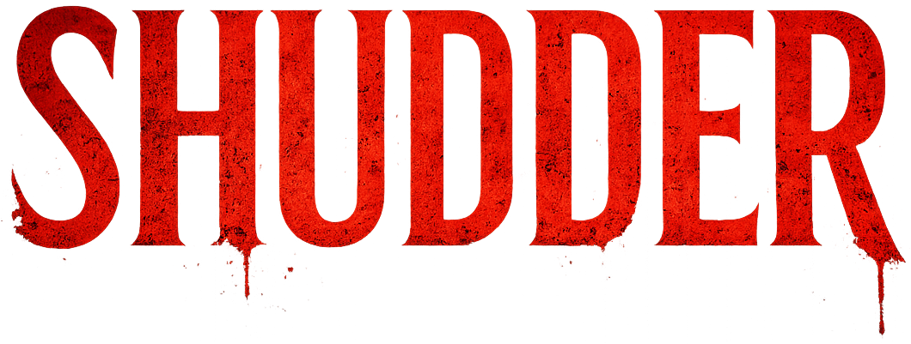

Status
Complete and seeking traditional representation.
Completed literary horror · 78,000 words

In 1992 Baltimore, a medical examiner begins documenting bodies that refuse every ordinary explanation. What lurks in the city's darkness is not a curse, but an ecosystem under pressure.
The novel
Dr. Tyler Moran, Maryland's acting Chief Medical Examiner, is trained to keep horror legible. A year-old mummified corpse arrives with a fresh bite mark. Another combusts in the morgue. Alone in the basement, she starts using words she never expected to need: vampire and ghoul.
The novel treats vampirism as infection and adaptation rather than superstition. Its predators live by secrecy, hierarchy, hunger and compromise, while the human world remains sheilded by the limits of 1992: before camera phones, omnipresent surveillance, social media, facial recognition and the final collapse of private darkness.
A hidden ecology
The pressure
Coven vampires live as carefully as they can among humans, passing through industrial clubs and private rooms with the grace of old aristocracy and the instincts of a threatened species. Elsewhere, harvesters reduce people to volume, logistics and disappearance.
Sam prowls the same streets. He feeds on vampires, convincing himself he is a necessary executioner even as addiction corrodes the story he tells himself. As covens vanish and bodies multiply, Tyler's evidence becomes less like discovery than complicity.
Manuscript
Complete and seeking traditional representation.
Literary horror with gothic, speculative and supernatural elements.
Baltimore and the surrounding Mid-Atlantic in 1992.
Approximately 78,000 words.
Representation inquiries
Query materials, synopsis, and sample pages are available upon request. info@gjherman.com